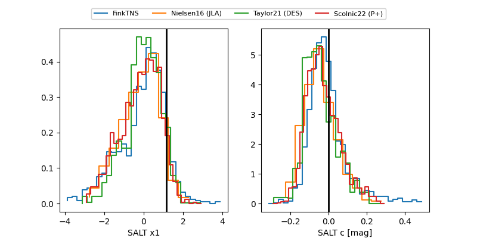

FINK: ZTF25abrnqww
Lasair: ZTF25abrnqww
ALeRCE: ZTF25abrnqww
ZTF25abrnqww (ztf,fink)
equatorial (ra, dec) = (32.9344,+18.32080)
galactic (l, b) = (148.3291,-40.55760)

last ztfr=20.54
1 ztfr detections